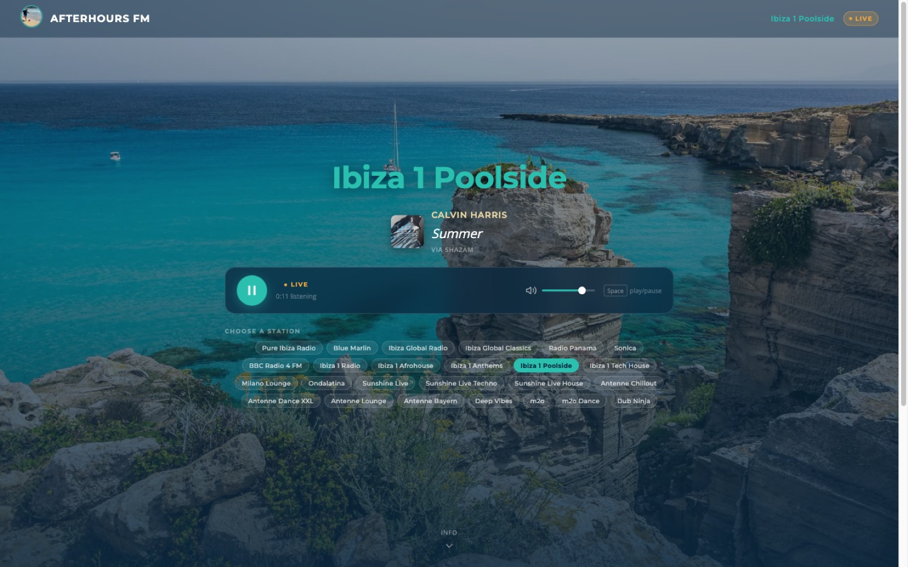
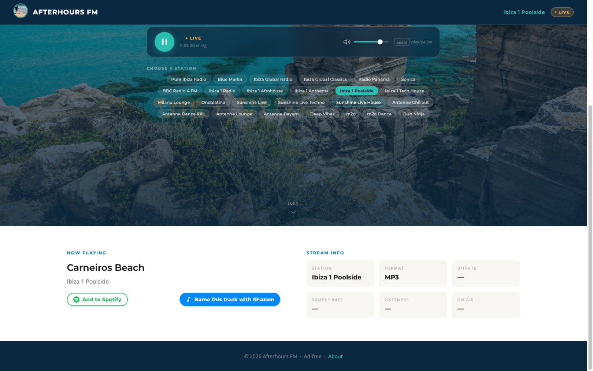

A self-hosted player for 25 Ibiza and European dance stations, with live track identification, album art, persistent play history, and one-click saving to Spotify.
Track names come from each station's own broadcast metadata where it exists, and from audio fingerprinting where it doesn't — no paid recognition API in either path.
How track identification works
Most web radio players show you the station name and stop there. The interesting problem is that broadcasters are wildly inconsistent about what they announce — so this uses a cascade rather than a single method.
Icecast and SHOUTcast streams interleave a small text block into the audio every
icy-metaint bytes, carrying StreamTitle='Artist - Title'.
The backend opens the stream with Icy-MetaData: 1, reads exactly one
metadata cycle, and disconnects. It never downloads or transcodes audio.
Cost: one HTTP read, milliseconds · Cached: 15s per station · Accuracy: exact — it's the broadcaster's own announcement
Only reached when step 1 returns nothing usable — some stations send an empty title, their own station name, or a raw JSON blob. The backend then captures ~10 seconds of live audio and identifies it via vibra, a C++ client for Shazam's fingerprint endpoint.
Cost: ~10–15s round trip · Cached: 45s, negative results included · Accuracy: a good guess from a short sample
The app
No framework and no build step — the entire frontend is one HTML file with inline JS, served straight off disk by nginx.


Architecture
There is no background polling task. A stream read happens only when a browser asks for one, and is cached per station. Audio itself never passes through the server — the browser plays each station directly.
Details worth knowing
Most of what follows exists because a live station behaved differently from the spec.
icy-audio-info vs ice-audio-info, prefixed vs bare parameter
names, and a bitrate header that sometimes arrives duplicated as "256, 256".
All three were found by hitting real stations.
Several stations 302 to a geo-nearest node. httpx doesn't follow redirects by default
— unlike curl — so without follow_redirects you silently parse the
redirect instead of the stream.
The API takes a station name and resolves the URL server-side from a registry. Accepting a URL from the client would let a caller point the backend at internal addresses it can reach but they can't.
CI runs the full suite against SQLite and PostgreSQL. asyncpg rejects timezone-aware datetimes where SQLite quietly accepts them — a gap that once shipped a bug that every local check passed.
Some stations announce their own name forever, or a JSON blob instead of a title. Those are filtered out and reported as no track rather than displayed as one.
Icecast counts are shown for the three stations whose mount could be matched with confidence. One station's port serves four mounts and none map cleanly — it shows a dash rather than a plausible wrong number.
Run it yourself
Playback, track identification and history need no configuration at all. The Spotify variables are optional and only affect the save button and cover art for metadata-sourced tracks.
# dev — hot reload, SQLite, http://localhost:8000 git clone https://github.com/kureka77/afterhours-fm.git cd afterhours-fm make dev # prod — PostgreSQL + nginx, http://localhost make prod
| Layer | Choice |
|---|---|
| Backend | Python 3.12, FastAPI, Uvicorn |
| Database | PostgreSQL 16 in prod, SQLite locally — async SQLAlchemy over asyncpg / aiosqlite |
| Reverse proxy | nginx — static files from disk, gzip, long-lived image caching |
| Recognition | ICY in-band metadata over httpx, with vibra/Shazam as fallback |
| Frontend | Vanilla HTML, CSS and JS — no framework, no bundler |
| Tests | pytest + pytest-asyncio, Vitest — 64 backend tests across two engines |